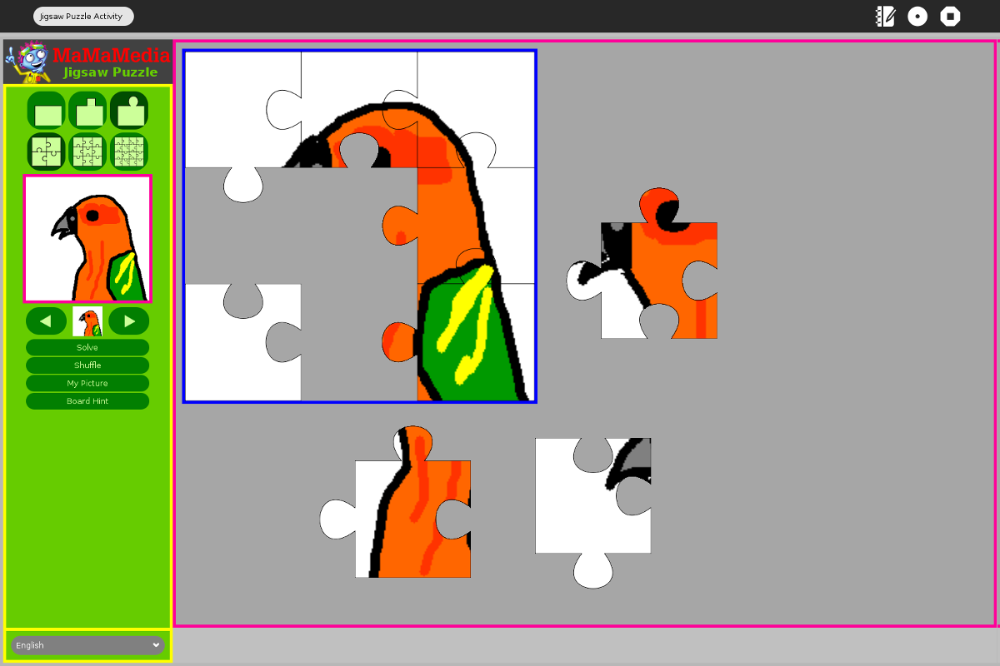

Jigsaw¶
Overview¶
The Jigsaw Puzzle is an important tool in helping students visually construct a picture. It allows students to construct a picture by building on their visual, spacial and problem solving skills. It also offers a context to explore many different subjects.
The Jigsaw Puzzle provides a fun context for learners (and beginning XO users) and encourages them to explore basic functions of the XO laptop.
Throughout the school year, the Jigsaw Puzzle can be integrated into different subject areas (i.e. geography, math and language arts). Students can make the Jigsaw Puzzle images relate to a subject the class is studying, and share them with peers. In the process they will also learn how to use and integrate the output from XO Paint program, Record, Mesh Network, and other tools.

Skills:
Practice working with a partner.
Practice problem solving.
Learn how pieces fit together to make a whole.
Learn through trial and error.
Learn how to use specific programs of the XO Laptop.
Learn how to import images made with Paint.
Learn how to import images made with Record.
Learn about maps and basic geography.
Exploring the Jigsaw Puzzle Activity¶
From the Home screen of your XO, click on the Jigsaw Puzzle icon.
Pick the subject of pictures you would like to solve. As an example, you can pick birds and then you have a choice to pick puzzles with pictures of birds on them.
Double click on the picture you would like to solve. The picture will be broken into small pieces for you to reassemble.
Click and drag a puzzle piece into the solving square. Once you have dragged all the pieces to the correct places, it will become a seamless picture.
Explore the puzzle options – change the shapes and the number of the puzzle pieces. You can click on Solve and the entire picture will appear. You can click on Hint and an outline of the puzzle pieces will appear in the solving box. Clear permits you to start again.
On the right hand side of the screen, you have the option to click on My Picture. You can import a picture you took with your camera or you can paint a picture and create your own puzzle image. Take time to explore how this feature works.
Work in pairs or independently to solve a few puzzles, and then walk around and work and help others who are still solving their puzzles. Share problem-solving strategies.
How to Read a Map¶
If there is an accessible map of the country you live in, put that up in the classroom. Or download a map from the Internet to look at on your XO Laptops.
Discuss with your class some of the following questions:
What are the geographical boundaries of your country?
Who are the neighboring countries?
How does your country compare in size to the neighboring countries?
Are there rivers in your country?
Are there mountain ranges in your country?
Look at the Map key. Discuss what certain symbols on the map mean. For instance, a star shows where the capital of the country is located.
Point out the map compass which will show North, South, East and West and explain how it can be used to locate items on the map.
Discuss what purpose a map serves. How do they help people understand a country better? One student can record these ideas on their XO Laptop using the Write activity.
Learn how to turn a map into a Jigsaw Puzzle.¶
Map Jigsaw Puzzles
Once you are familiar with the map of your country, try to find that map (or one of another place you are interested in) on the Internet and download it. Try using Google Maps and other free map services.
If you do not have Internet access, try painting a map with the Paint activity, or taking a picture of a wall map with the Record activity.
Take your new map image and import it into the Jigsaw puzzle activity to create a map puzzle for other students to solve.
From the Home screen, click on the Jigsaw Puzzle icon to open it.
Click on the “My Picture” button. A window showing a list of the things saved in your Journal will appear. Look for the saved picture or photo you want to make into a puzzle and click on it. The image you chose from the Journal will appear in the Jigsaw Puzzle.
Choose the “Share with my Neighborhood” button at the top of your screen so others can access your map image through the Mesh.
Go to the Neighborhood view and click on a Jigsaw puzzle that another student is sharing. Once it loads on your laptop, you can try to solve it toghether with your friend!
Once you solve a map puzzle, tell the group what country or place it is.